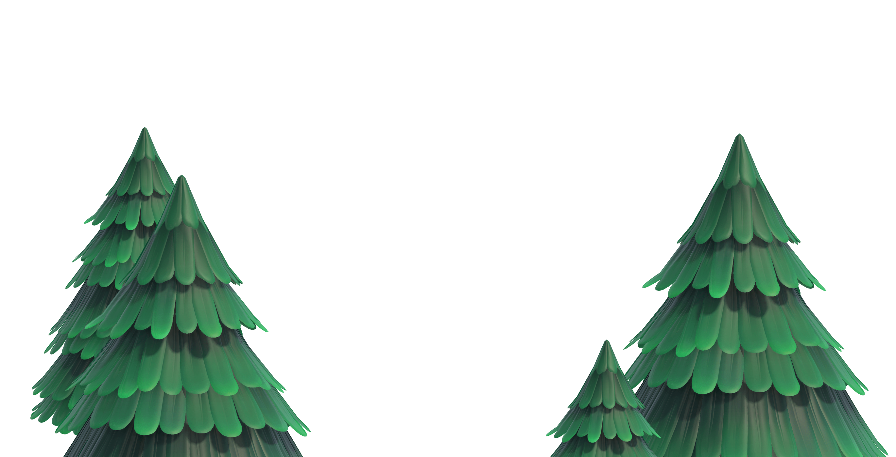
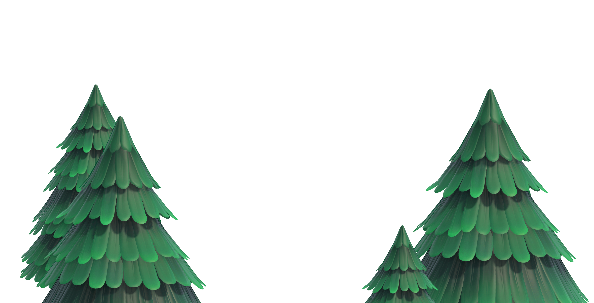

모여봐요 동물의 숲
2020.03.20
2020.03.20

무인도에서 새로운 생활을 시작해요!
이번 무대는 무인도. ⌈Nook Inc.⌋가 제공하는 ⌈무인도 이주 패키지 플랜⌋에 참가해서 섬 생활을 시작하게 됩니다.
해변에서 여유를 즐기거나 주변을 탐색하거나... 사람의 손이 닿지 않은 자연 그대로의 무인도 생활을 기대해 주세요.
모여봐요 동물의 숲
패키지 버전 / 다운로드 버전
메이커 : 한국닌텐도
발매일 : 2020년 3월 20일 (금)
희망소비자가격 : 64,800원
이용등급 : 전체이용가
©2020 Nintendo
하나의 섬에 몇 명까지 유저를 등록할 수 있나요?
Nintendo Switch 소프트웨어 『모여봐요 동물의 숲』은 1대의 Nintendo Switch와 1개의 소프트웨어로, 본체에 등록되어 있는 최대 8명의 유저가 한 개의 섬을 공유하여 플레이할 수 있습니다.
몇 명까지 함께 플레이할 수 있나요?
최대 4명까지 같은 섬의 주민이 되어 플레이할 수 있습니다. (플레이어 1명당 컨트롤러 1개가 필요합니다.)
로컬 통신/온라인 플레이로는 본인 혹은 친구의 섬에 모여서 최대 8명까지 함께 플레이할 수 있습니다.
※온라인 플레이를 하려면 Nintendo Switch Online(유료) 가입이 필요합니다.
※Nintendo Switch Online은 18세 이상의 닌텐도 어카운트로만 이용할 수 있습니다.
여러 개의 섬을 만들 수 있나요?
본 소프트웨어를 여러 개 사용해도 만들 수 있는 섬은 본체 1대당 1개입니다. 다른 섬에서 플레이하려면 별도의 본체가 필요합니다.
섬의 저장 데이터는 Nintendo Switch 본체에 저장되기 때문에 본체 1대에 패키지 버전과 다운로드 버전을 따로 사용하더라도 섬(저장 데이터)은 1개입니다.
2대째 본체를 구입한 경우, 다른 본체에 저장 데이터(섬의 데이터)를 이사할 수 있나요?
본 소프트웨어의 저장 데이터는 ⌈유저의 이사⌋ 및 ⌈저장 데이터의 이사⌋에 대응하지 않기 때문에, 다른 본체로 저장 데이터를 이사할 수 없습니다.
Nintendo Switch Online의 ⌈저장 데이터 맡기기⌋에 대응하나요?
본 소프트웨어는 Nintendo Switch Online의 ⌈저장 데이터 맡기기⌋에 대응하지 않습니다.
저장 데이터는 백업할 수 없나요?
Nintendo Switch 본체의 고장∙분실∙도난에 대비하여 본 소프트웨어의 독자적인 방식으로 저장 데이터를 백업하는 기능을 검토 중입니다. 단, 본 기능은 Nintendo Switch Online 가입자에 한해 이용할 수 있으며, 대응 시기는 미정입니다. 시기가 정해지는 대로 안내해 드리겠습니다.
이 소프트웨어는 Nintendo Switch Lite로 플레이할 수 있나요?
네, Nintendo Switch Lite로 플레이할 수 있습니다.
단, 같은 섬의 주민끼리 Nintendo Switch Lite로 동시 플레이(파티 모드)를 할 경우, 인원수만큼의 Joy-Con이나 Nintendo Switch Pro 컨트롤러를 접속해야 합니다.